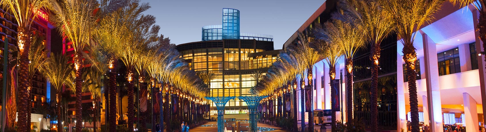
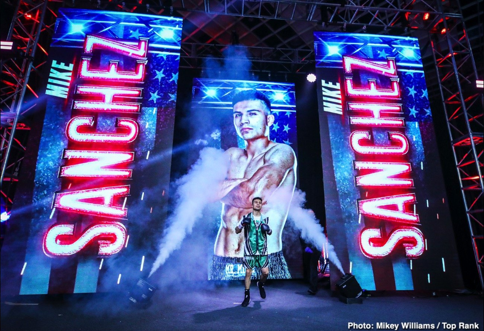

Learn About Your Future Jr. Software Developer
Scroll down to get to know me!
Background
I was born in Orange County, California in the city of Anaheim. I am Hispanic both of my parents being born in Mexico. At the age of 7, my family decided to move out to the city of Colton about 50 miles east from Los Angeles. This is what I consider now home. I grew up a good student wanting to go to college. After a fair try at it I decided it was not what I wanted to pursue. I then opted for pursuing a professional career in boxing in which I had prior experience starting at the age of 14.

Professional Boxing Career
My professional athletic career inititated in 2018. I was 21 years of age. The first bout was located in the California Education and Performing Arts Center in Ontario, California. My top success was being televised live through the biggest sports network ESPN. This fight took place in the great MGM in Las Vegas, Nevada. I retired from the sport due to multiple injuries to my shoulder which impeded me to perform at a high level. I ending my career with 9 professional fights; 1 being a loss, and another a controversial loss.

Hobbies
Aside from boxing I have other likes and hobbies tied to fitness. I enjoy long distance running and resistance training. I also like to read in my free time and surf the web learning financial literacy. Writing is another hobby I enjoy that correlates to my daily reading.
Goals
Acquire a base foundation in Software Development in likings of:
- HTLM5- structuring of a web page
- CSS / SASS- visually appealing display
- Javascript- efficient user interface
- Web Design- unique and personal touch